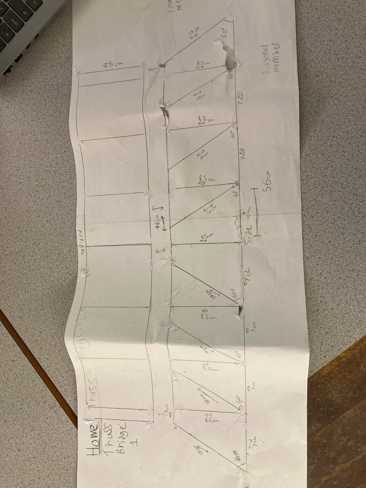

#Test 1
Design process:
Our first test, we recearched all types of trusses and settled on the howe because its structured to mainly support weight in the middle. We also decided to make a lightweight because we though the ratio of weight to force handled would be better. First we created this paper underneath, then we cut all the spaghetti we needed to the good sizes, and glued them together.

Testing and results:
On our first test, we placed 3rd with an overall weight of 1bls carried. The reson we placed well was not because we had a good weight to force ratio, but only because we met all the criteria and didnt have bad dimensions.
Reflections and improvements
We have learned that a heavyweight is more worth it then a light weigh, also weve observed that trusses with quadrangular uper beams do better, like a parker or baltimore truss, for our nexttest we willl make our bridge bigger, heavier, and stronger.